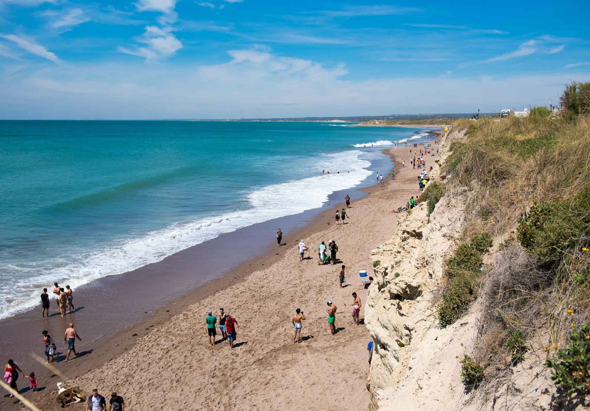

Hola mundo
Mi nombre es GianFranco Soy de Río Negro provicia del sur de la Argentima y tengo 25 años
Lista nombres
- Pedro
- Agustín
- Carlos
- Omar
- Gabriel
Preparación de mate
- Llenar la pava
- Poner a calentar el agua entre un 70° y 80°
- Preparar el mate con yerba y bombilla
- Servir agua en el mate
- Disfrutar